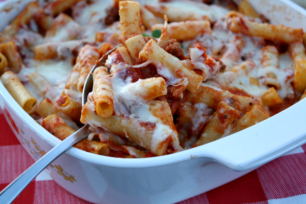

The Dish is:Baked Ziti with Crunchy Italian Salad and Garlic Bread

Ingredients
Course Salt and ground pepper
8 ounce ziti rigate(ridged) or other short pasta
1 cup part-skim ricotta
1/4 cup parmesan, finely grated
1/2 cup mozzarella, shredded
1 24oz can tomato sauce
1/2 cup parmesan, finely grated
1/2 cup mozzarella, shredded
1/2 loaf Italian bread(5 ounces)
2 tablespoon butter, melted
2 Garlic cloves, minced
1 tablespoon sherry vinegar or red-wine vinegar
1 tablespoon olive oil
1 head Belgian endive, stem end trimmed, thinly sliced
3 1/2 oz arugula, thick stems removed
Instructions
Preheat oven to 450 degrees. Bring a large pot of salted water to a boil. Cook pasta until al dente,
according to package instructions; drain and reserve.
In a small bowl, combine ricotta, egg, a third of the Parmesan,
and half the mozzarella; season with salt and pepper.
In the bottom of a shallow 2-quart casserole dish, spread half the tomato sauce. Top with ziti, then ricotta mixture and remaining sauce. Sprinkle with remaining Parmesan and mozzarella. Place casserole on a rimmed baking sheet, and bake until top is browned and sauce is bubbling, 20 to 25 minutes.
Meanwhile, prepare garlic bread: Make deep, even cuts into the bread, about 1/2 inch apart, without cutting through the bottom. In a small bowl, combine butter and garlic; season with salt and pepper. Brush garlic butter between cuts in bread. Wrap bread loosely in aluminum foil, and bake with ziti during last 10 minutes of baking.
In a large bowl, whisk together vinegar and oil; season with salt and pepper. Add endive and arugula, and toss to coat. Serve baked ziti with salad and garlic bread.